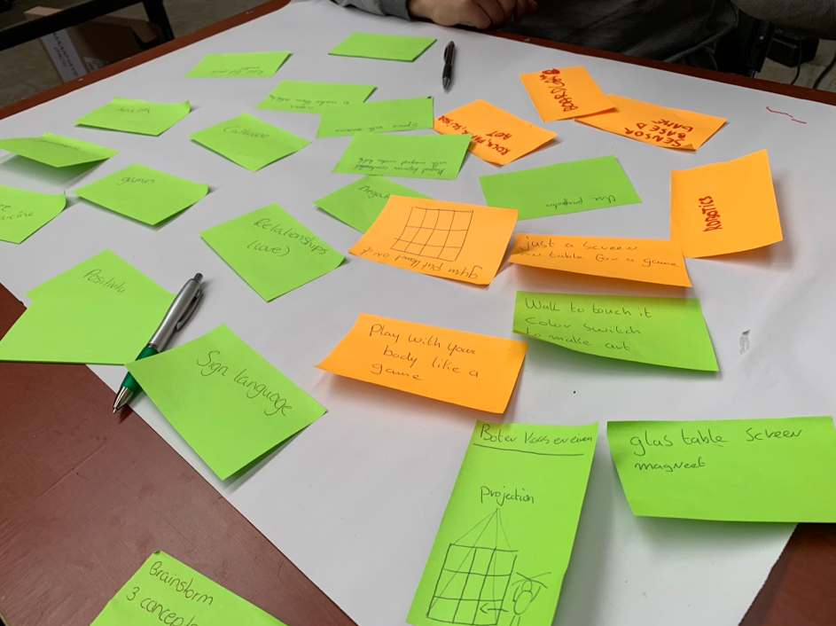
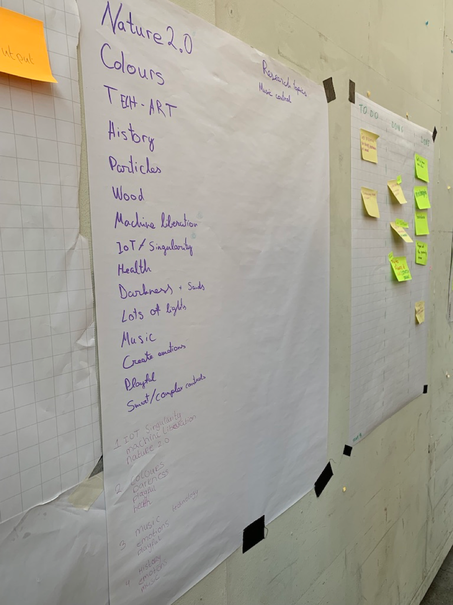
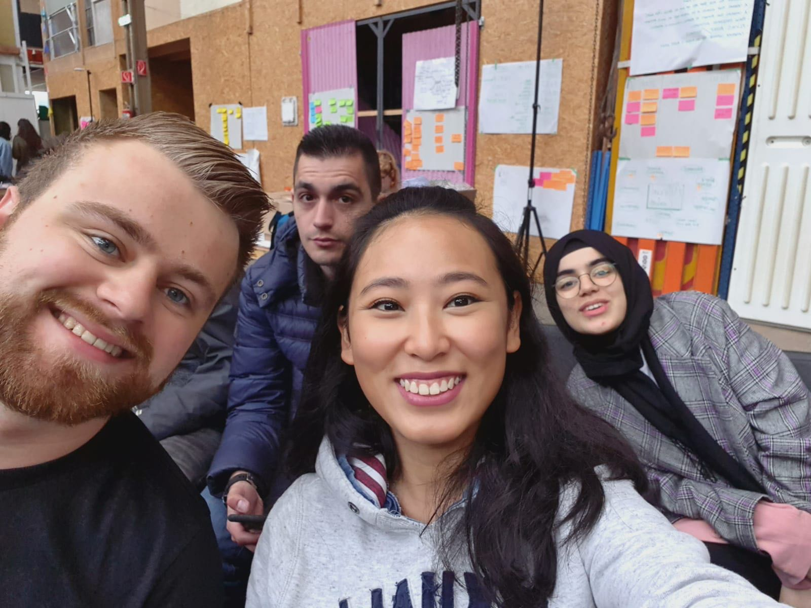
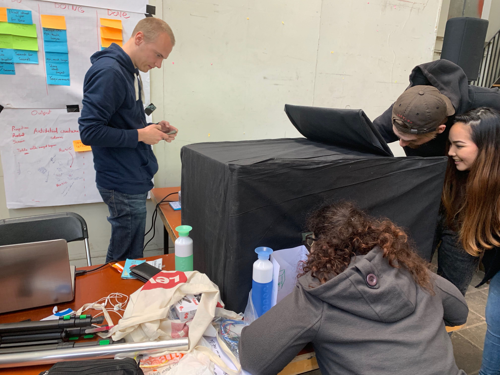
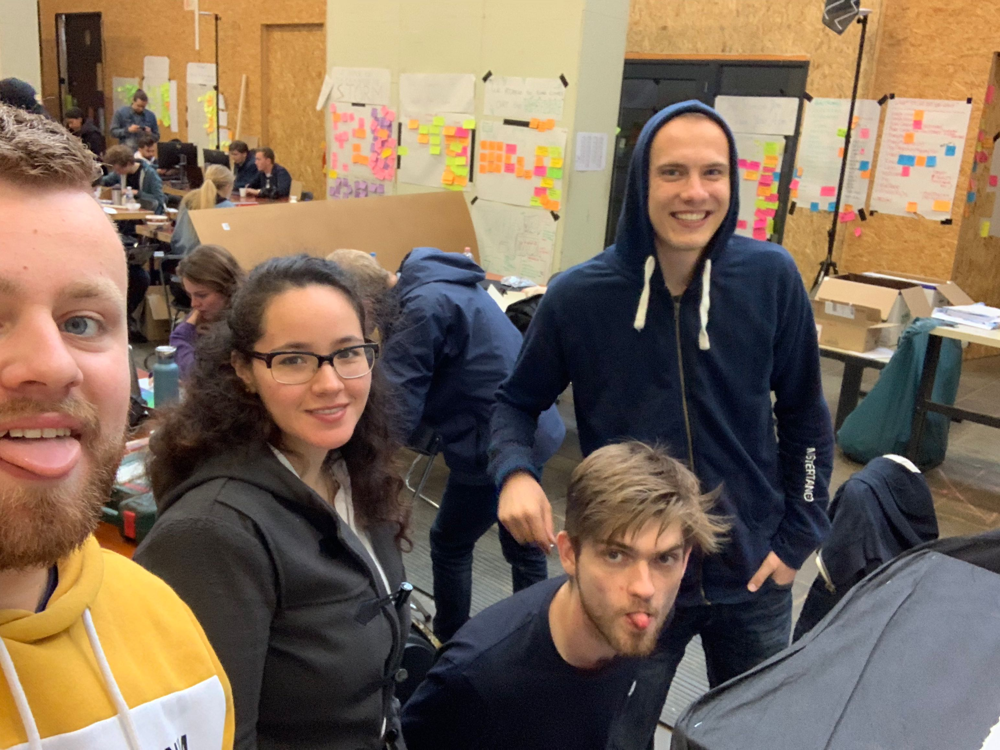
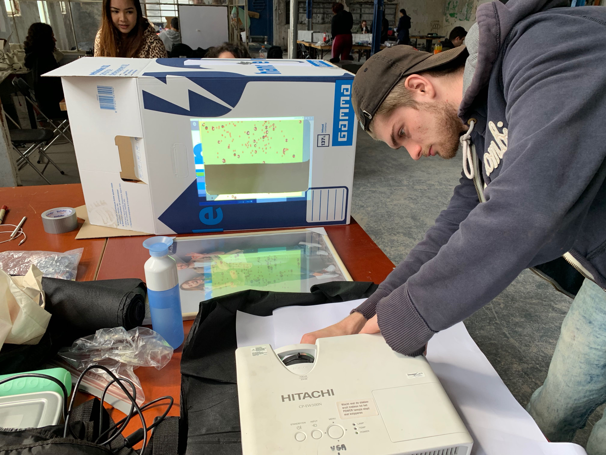
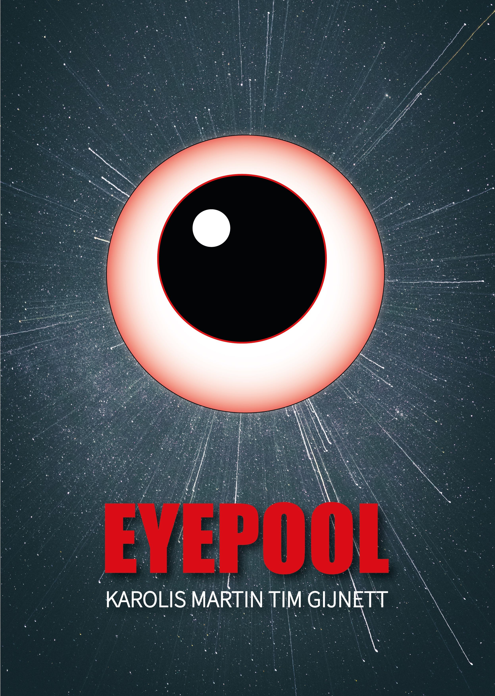
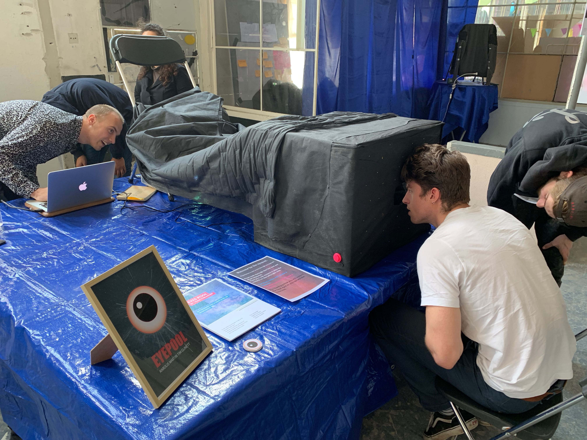

HCI-lab weeks laatste blok van het jaar. Twee weken gaan wij bezig zijn met het maken van iets heel specials. In de maakhaven zo‘n 10 a 15 min lopen van Haagse Hogeschool hadden wij een grote ruimte tot onze beschiking. Daar gaan wij onze creaties uitwerken en hopelijk wat moois neer zetten.
Aan het einde van de twee weken hebben wij een expositie waarbij mensen van bedrijven komen kijken, en waarbij je ook je eigen familie en vrienden mag uitnodigen. Daarbij gaan wij dan onze creatie laten zien en natuurlijk ook andere creatie bekijken.
Log boek
Maandag 3 juni 2019
Vandaag was onze eerste HCI-lab dag. Om 08:45 uur werden wij verwacht en wij begonnen om 9 uur met luisteren naar Chris Heydra. Chris vertelde wat er allemaal op de planning stond en wat er vandaag zou gaan gebeuren. Na het verhaal van Chris konden wij op uitgeprinte lijsten zien in welke groep je zat. Alleen stond ik niet op de lijst. Na dit hebben nagevraagd waren er nog 3 anderen mensen die niet op de lijst stonden. Zodoende zijn wij een groepje gevormd.
Zo was ik met Gynett, Karolis en Martin komen te zitten. Wij hadden een voordeel ten opzichte van anderen groepjes was dat wij zelf mochten kiezen wat voor onderwerp wij zouden doen. Na overleg hadden wij gekozen voor Artificial Creatures. Was niet helemaal mijn eerste keuze, maar de rest wou het graag en zodoende ben ik daarin mee gegaan.
Toen zijn wij aan een tafel gaan zitten, wat onze plek voor de aankomende twee weken zou worden. Hebben wij nog kort kennis gemaakt met elkaar en zijn toen aan de slag gegaan. Wij begonnen met het maken van een planning. Zodat wij overzicht konden creëren. Daarna zijn wij gaan brainstormen over Artificial Creatures, wat het inhoudt, wat het is en wat het doet. Wij hadden al snel leuke ideeën verzonnen. Deze hadden wij op een post-its opgeschreven en later op een groot vel opgeplakt en bij elkaar gesorteerd en toen wij daar klaar mee waren was onze eerst HCI dag voorbij en ging Chris de dag afsluiten.

Dinsdag 4 juni 2019
Onze dag begon met een smalltalk van Chris, waarin er gezegd werd dat wij een daily stand moesten houden, van ongeveer 15 min. Wij besproken wat onze ideeën waren en wat wij voor vandaag zouden gaan doen. Het idee was om 3 concepten uit te werken en dan kijken wat ons het beste lijkt. Nadat hebben gedaan, waren wij rond half 12 klaar. Wij hadden toen om 13:00 uur een gastspreker (Vincent Lindeboom) die een presentatie gaf. Ik moest toen ook om 14:00 uur op school zijn om een Nederlands toets te herkansen. Ik ben toen weg gegaan en niks meer mee gekregen van de presentatie. In de avond had ik nog van mijn groepsgenoten vernomen dat ze in gesprek waren met een ex-student die er was. Hij heeft ze geholpen door meer uitleg te geven over het idee van ons concept en dat ze daardoor op een concept waren uitgekomen. Wat leuk was om te horen en ik zou daar de volgende dag meer van komen te horen.

Woensdag 5 juni 2019
Vandaag begonnen wij de dag met in een kring zitten waar ik nog een selfie had gemaakt met een paar vrienden. Nadat Chris zijn gesprek had gedaan, gingen wij de daily stand houden van nu twaalf minuten. Wij hadden besproken wat wij gisteren hadden gedaan en wat de planning voor vandaag is. Toen kregen wij een presentatie van Dr. Broekens. Hij gaf een presentatie op Robotics en emotions. Het was een erg interessante presentatie. Na de presentatie hadden wij afgesproken om vandaag rustig aan te doen en meer research te doen naar creatures. Hoe ze bewegen, wat mensen ervaren en hoe ze reageren. Ik ben vooral bezig geweest met het ontwerpen van de creatures en ben ik met spullen heen en weer geweest qua testen van de beamer en hoe dat uitpakte op het scherm. Ik ben online nog opzoek gegaan naar spullen die ik denk nodig te hebben. In mijn pauze ben ik naar de Blokker en Big Bazer geweest om daar te kijken of er wat bruikbaars was om te gebruiken voor ons concept. Nadat dat ik terug was ben ik nog bezig geweest met het bedenken hoe wij het project gaan opzetten.

Donderdag 6 juni 2019
Vandaag begonnen wij de dag met een presentatie van Teun Verkerk, die een hele interessante presentatie gaf. Hij had bugs meegenomen die normaal in de straten zijn te vinden. Deze bugs leven, ze kunnen geluid maken, light geven, trillingen geven en tikken met een ijzer staafje. Ook kunnen ze communiceren met elkaar, maar helaas kunnen geen mensen waarnemen, als die erbij staan of langsrijden. De bugs geven random geluidjes, of licht, af en toe en dat doen ze allemaal op zichzelf. Na de presentatie zijn wij bezig geweest met de programmeercode waar voornamelijk Karolis en Martin mee bezig waren. Ik ben vooral bezig geweest met het verder ontwerpen van de creatures. Ook ben ik verder gegaan met het testen van de beamer. Waar ik vooral oplette was of het witte papier genoeg doorscheen dat je het beeld op kon zien en ben ik nog bezig geweest met de To-Do list om beter te ordenen en om nieuwe activiteiten toe te voegen.
Vrijdag 7 juni 2019
Ik begon de dag met een presentatie van Marcello Gómez Maureira die ons een heel interessant presentatie gaf. Hij liet ons zien, dat er game bestaat die je lijdt door een ruimte met allerlei kamers en deuren. Het excentrieken was dat er een raam was met een wit uitzicht. Als je probeert om door het raam heen te springen, kwam je opeens in een ruimte waar je niks meer zag, zo was alles wit om je heen. Wij kon je het raam nog zien waar je net doorheen sprong, maar dat nu wel te hoog zit en je er niet meer bij komt. Het is grappig om te zien dat er dus een bug in het spel zit en dat spellers dat dus proberen om door het raam te gaan, terwijl dat niet was ontworpen. Nadat we de presentatie hadden gehad ben ik naar de gamma geweest. Ik ben daar opzoek gegaan naar een grote doos. De rest van de groep was vooral bezig met het ontwerpen en programmeren van de creatures. Toen ik terugkwam heb ik de doos in elkaar gezet en heb ik kijkgaten gemaakt voor de creatures. Nadat ik daarmee klaar was, toen was het al half vijf en gingen wij de dag afsluiten.

Dinsdag 11 juni 2019
Na drie heerlijke vrije dagen, begon de tweede week van de lab weeks. Nadat Chris zijn dagelijks zegje had gedaan begonnen wij zoals gewoonlijke met de daily standard. Waar we eerst het weekend bespraken en toen hebben besproken wat er vandaag gaat gebeuren en wat er nog te doen valt. Ik was ondertussen lekker van mijn ochtend croissantje ontbijt aan het genieten. Na de stand up. Had ik nog mijn idee die ik in het weekend had opgedaan en had ik gedeeld met de groep. Waarbij ik het idee had om een dark room te maken met een projector daarvoor een wit laken en dan daarvoor een zwart laken met gaten erin. Zodat de persoon door de verschillende gaten naar het scherm kan kijken op het witte laken. Nadat ik dit had gedeeld gingen wij discussiëren of het een goed idee was. Gezamenlijke kwamen wij erachter dat het niet goed een sfeer gaf, door het op een groot laken het scherm te projecteren. Zo ben ik samen met Gijnett gaan bedenken hoe we dit het beste kunnen aanpakken om die dimensie en sfeer te creëren.

Woensdag 12 juni 2019
Na een late start, omdat er twee mensen te laat waren. Ging wij snel de daily standard houden. Ook hadden we gekeken naar het To Do list. Deze hebben wij aangepast en hebben wij activiteiten toegevoegd. Ik had project video maken als taak opgeschreven. In de ochtend ben ik gestart met de foto’s en video’s van de afgelopen week bij elkaar te verzamelen. Nadat ik de foto’s en video’s had geëxporteerd. Heb ik ze toegevoegd aan het iMovie programma. Toen ben ik begonnen met het samenvoegen van foto’s en video’s en heb deze in de reeks film gezet. Ben rond half een met pauze gegaan. Na de pauze ben ik verder gegaan met het invullen van de google form die Chris had aangemaakt. Hierbij moest ik samen met mijn groepje informatie opgeven over ons project. Ik ging aan met de omschrijving over ons project. Nadat het goed was gekeurd door mijn groepsgenoten heb ik het formulier verstuurd. Toen ben ik aan de slag gegaan met de project box verbeteren. Ik heb het gat grote gemaakt, waar de projector doorheen projecteert en toen heb ik de bekleding beter vast gemaakt. Ook was ik aan het proberen om het scherm meer naar voren te creëren om meer het effect te krijgen. Zodat je het idee krijgt dat je in een wereld kijkt en niet de egde van het projectiescherm ziet.

Donderdag 13 juni 2019
Ik had afgesproken met de groep dat ik in de ochtend laten zou komen. Dit kwam omdat we nog veel spullen op het laatste moment moesten kopen. Zo werd er ons gisteren verteld om op nieuw te beginnen met de box(doos). De eerste box zag er niet zo mooi uit. Zo werd de box gebruikt voor prototyping. Eerst ben ik naar de action gelopen en heb ik daar afdekzeil gekocht met het idee om een dark room te creëren. Daarnaast heb ik ook zwart doek gehaald wat normaal wordt gebruikt als worteldoek, vonden wij mooi om te gebruiken als bekleding van de kijkdoos. Zowel aan de buiten kant als aan de binnenkant. Ik heb ook een fotolijst gehaald met het idee om het glas te gebruiken voor een pepper’s ghost effect en had ik nog glitterlijn gekocht om te kijkdoos mee te versieren. Toen ben ik lopend naar school gegaan om daar een groot wit vel papier te halen. Met mij charme (;-P) kreeg ik het stuk vel papier gratis mee. Toen op de bus richting calandplein. Daar nog richting de gamma om een nieuwe verhuisdoos te kopen, een XXL doos. Deze doos werd onze uiteindelijk kijkdoos. Zo ben ik met alle spullen op pad gegaan naar maakhaven. Eenmaal aangekomen was ik wel moe, want het was toch niet zo licht als ik hoopte. Na een korte break ben ik direct aan de slag gegaan om de kijkdoos af te maken. Gijnett heeft mij daarbij ook geholpen. Toen hebben wij de doos bekleed met worteldoek en hebben wij met een stanleymes de gaten creëert om zo de projectie doorheen te laten schijnen. Voor wij het wisten was het alweer half 5 en was de doos nog niet helemaal naar mijn zin af. Dus maar hopen dat het morgen goed komt.

Vrijdag 14 juni 2019
De laatste dag was aangebroken, 09:00 uur tot 21:00 uur. Er stond nog veel op de planning voor vandaag. Zo moest de kijkdoos nog afgemaakt worden en moest er nog gekeken worden naar de knoppen voor de besturing. Wij waren begonnen met de box afmaken. Ik was bezig met het scherm dat in de box terecht kwam, waar ik het projectiescherm op wil laten projecteren. Met wat moeite kwam het papier erin. Toch vond ik dat het papier te veel was gekreukeld. Zo hebben wij daar iets anders voor verzonnen. Maar eerst gingen we verder met de knoppen, want de tijd ging hard. We hadden besloten om aan de zijkanten drukknopen te bevestigen. Het werd pink links en blue rechts. Met de knoppen kon je creatures toevoegen aan de wereld. Ook hadden we nog een joystick aan de rechterkant toegevoegd. Daarmee kon je de creatures laten verdwijnen door een rood vak. Verder was ik veel bezig met schoonmaken en rommel opruimen. Ook was ik in de pauze nog naar huis gegaan om daar te printen. Ik heb een poster uitgeprint die ik had gemaakt en een uitleg pagina waarop je ziet hoe het werkt. Nadat ik terugkwam waren wij bezig met afronden en nog verder schoonmaken en hebben wij de opstelling gemaakt voor de expo. Wij hadden twee tafels gebruikt. Een afdekzeil over de tafels om onze spullen onder de tafel af te schermen. De kijkdoos op de hoek van de tafel gezet met de beamer aan de achterkant en nog een zwart doek over de beamer en over de kijkdoos om het af te schermen. Toen zijn wij met z’n alle pizza gaan eten. Ik zat buiten met een groepje lekker van de zon genieten. Om 4 uur werden we naar binnen gehaald om de expo te laten beginnen. Iedereen ging naar zijn plek om de expo te starten. Tijdens de expo waren we om beurten bij onze project om mensen uit te leggen wat de bedoeling was en wat je kon zien. Ik heb een leuke avond gehad en veel leuke activiteiten mogen zien en doen. Wat een gave ervaring was dit om mee te maken.

Product EYEPOOL
Introductie
Ons onderwerp was Artificial Creatures. Wij hadden een gezamenlijk interesse in dit onderwerp. Zo hadden wij het plan om er iets moois van te maken. En om te kijken of wij het voor elkaar krijgen dat ze zelf bepaalde actie gaan uitvoeren door self learning program. Ook speelt de mens een rol in ons project. Wij wilde het lekker gek maken, zodoende ons slogan: We promise you another level of weirdness.
Product
Het onderwerp is Artificial Creatures. Wij hadden het idee om een wereld te creëren, een andere dimensie. Deze wereld bestaat alleen uit verschillende creatures, die een vorm hebben van ogen. Er zijn vier soorten die op deze wereld leven. Je hebt twee jonge ogen die zwart of wit van kleur zijn. Ook heb je volwassen ogen die ook zwart of wit van kleur zijn, maar wel twee keer zo groot van de jonge ogen.
Wat is hun doel op deze wereld?
Ze kunnen zelf bepalen wat ze doen, tenzij er een gebruiker aan toe pas komt. De gebruiker heeft macht over de creatures en kan de wereld naar zijn eigen zin maken. De creatures kunnen zichzelf reproduceren. Zo word de wereld steeds voller. Ook gaan de creatures(ogen) een keer dood. Je ziet dat doordat de creature zijn oog dicht heeft. Andere creatures eten de dode ogen op.
Wat kan jij als gebruiker?
Met de knoppen links en recht kan je creatures toevoegen aan de wereld. De joystick kan je bewegen en dat zie je op het scherm. Het rode vak zorgt ervoor dat je creatures kan weghalen van de wereld.
Verder?
De bedoeling is echter dat de creatures uit zichzelf kunnen voortbewegen. In hun eigen wereld leven en zelf bepalen of ze gaan eten of dat ze zich zelf gaan reproduceren.